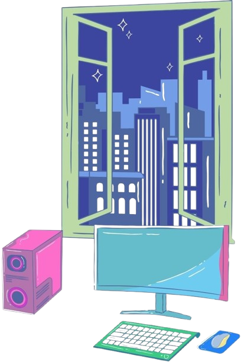

Belum selesai
Bahan Bacaan
Pelajari materi berpikir komputasional melalui bahan ajar PDF.
Petualangan memahami masalah dan menyusun solusi secara sistematis.

Amati permasalahan, diskusikan bersama kelompok, dan rancang solusi menggunakan Berpikir Komputasional.
Tonton video berikut sebelum memulai diskusi.
Gunakan pertanyaan berikut sebagai panduan awal.
Apa masalah utama yang terjadi dalam video?
Apa saja kemungkinan penyebab masalah tersebut?
Informasi apa yang diperlukan untuk menemukan solusi?
Bagaimana menyusun langkah penyelesaian yang logis dan teratur?
Pembagian kelompok akan disampaikan oleh guru di kelas.
Setelah kelompok ditentukan, diskusikan permasalahan dan susun solusi awal. Setiap anggota diharapkan menyampaikan gagasan dan berkontribusi dalam penyelesaian tugas.
Tidak harus langsung menemukan solusi sempurna. Tuliskan ide awal kelompok, kemudian periksa dan perbaiki setelah mempelajari materi Berpikir Komputasional.
Unduh lembar kerja, buka menggunakan Microsoft Word atau aplikasi pengolah dokumen di laptop sekolah, lalu kerjakan bersama kelompok.
Unduh LKPD (Word)Simpan hasil pekerjaan dan ikuti petunjuk guru untuk pengumpulan serta presentasi.
Setelah mempelajari materi dan menyelesaikan aktivitas, peserta didik diharapkan mampu memahami dan menerapkan fondasi berpikir komputasional dalam menyelesaikan masalah sehari-hari.
Pelajari materi berpikir komputasional melalui bahan ajar PDF.
Tonton video untuk memahami konsep dan contoh penerapan CT.
Eksplorasi strategi dan algoritma melalui permainan Tower of Hanoi.
Buat flowchart untuk menyelesaikan permasalahan sehari-hari.
Memecah masalah kompleks menjadi bagian atau submasalah yang lebih kecil agar mudah dipahami dan diselesaikan.
Mencari kesamaan, perbedaan, pengulangan, atau hubungan pada masalah dan data untuk membantu membuat prediksi.
Berfokus pada informasi yang relevan untuk tujuan tertentu sambil mengabaikan detail yang tidak memengaruhi solusi.
Menyusun urutan instruksi yang logis, jelas, dan berhingga untuk menyelesaikan masalah.
Video Pembelajaran Berpikir Komputasional SMA Kelas X. Jika video tidak dapat diputar pada perangkatmu, buka langsung di YouTube melalui tautan berikut:
Pada jam istirahat, antrean kantin panjang sehingga sebagian siswa memiliki sedikit waktu untuk makan. Tujuannya adalah mengurangi waktu tunggu tanpa mengurangi ketepatan transaksi atau membuat akses tidak adil.
Mulai Menyusun Flowchart ↘Uraikan faktor: jumlah loket, jenis transaksi, pembeli, dan alur pemesanan.
Catat jam ramai, menu populer, dan transaksi yang memerlukan waktu lama.
Pilih data yang berpengaruh pada waktu tunggu dan abaikan yang tidak relevan.
Uji perubahan alur pelayanan, ukur hasil, lalu revisi jika diperlukan.
Susun simbol dan hubungkan alurnya, lalu tekan “Periksa Flowchart”.
Tips: setiap jalur sebaiknya berawal dari Mulai dan berakhir di Selesai.
Kamu perlu menyelesaikan seluruh aktivitas pembelajaran pada menu Materi terlebih dahulu sebelum mengerjakan asesmen.
Ceritakan fondasi CT yang paling kamu pahami, tantangan yang kamu hadapi, dan bagaimana kamu memperbaiki flowchart.
Media pembelajaran Informatika yang memadukan bahan bacaan, video, permainan edukatif, dan Flowchart Builder untuk membantu peserta didik memahami serta menerapkan empat fondasi berpikir komputasional.
| Mata Pelajaran | : Informatika |
|---|---|
| Jenjang | : SMA |
| Kelas | : X |
| Fase | : E |
| Materi | : Berpikir Komputasional |
Pengembang Media Pembelajaran CT Game Lab.